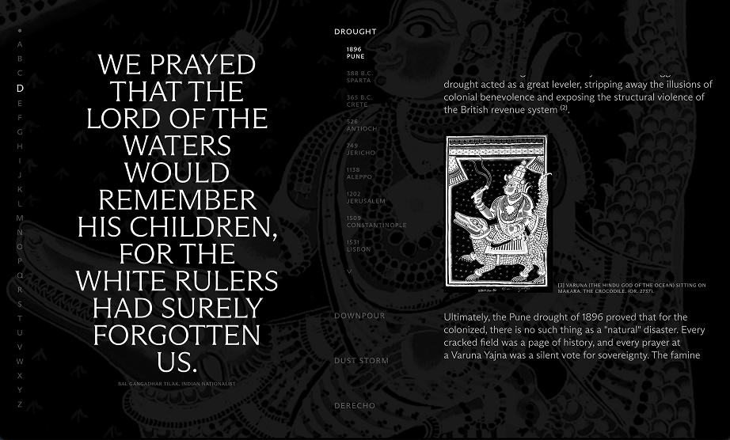
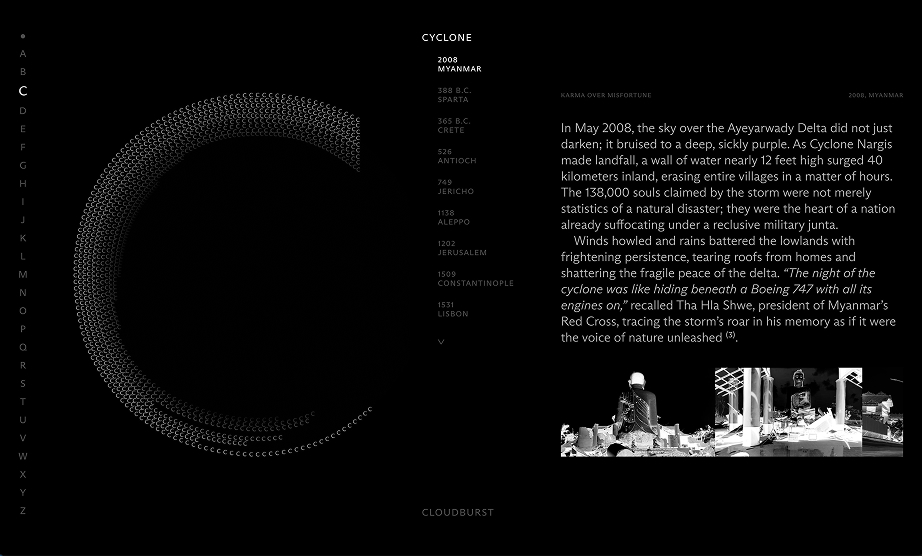
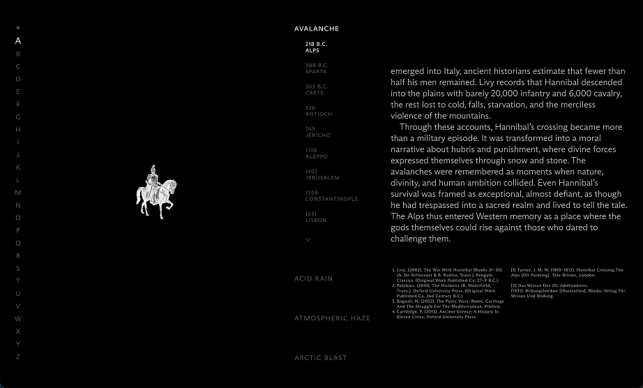
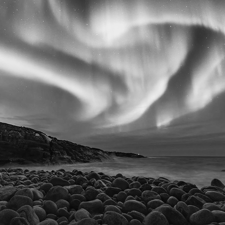
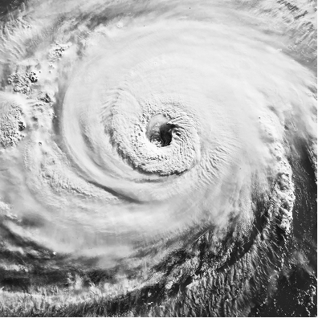
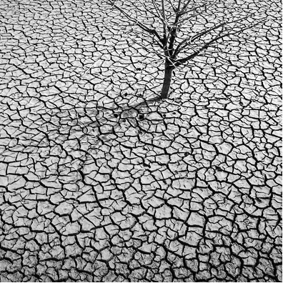
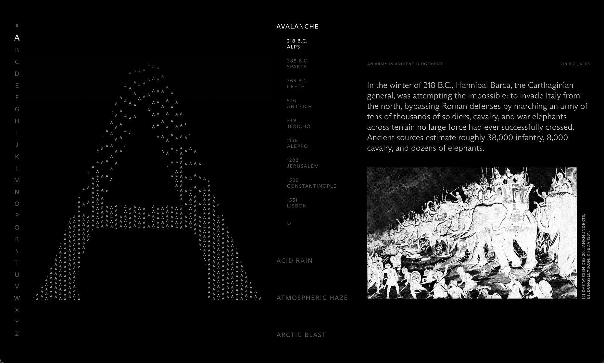

numen
The brief asked to explore the weather as a theme, developing it into a graphic project which used typography as its main element.
Therefore, I explored the relationship between humanity and nature in the form of the divine.
When given the brief, I approached the weather theme through various technical characteristics like pressure or force, and a lot of the time we may think of the weather as something static in our minds; but in reality, rain falls, winds blow and the earth shakes. Nothing about weather phenomena is stable or static if it has a witness, and in this case study, I looked into our own perspective of it throughout history. This perspective has appeared in different shapes, names, languages and stories; but they all still have something in common: when reason and logic is nowhere to be found, we resort to the divine to give us an answer for all the loss and confusion.
For the compilation of events, I studied many different cultures and religions and their perceptions of different natural disasters from the past to the present. In this encyclopedia can be found stories of giants, sins, demons, kamis, gods and saints. All of them classified by letter, then phenomena, and ending with the historic dates of the events.



For the typography aspect,
the main design concept was movement.
The weather is constantly changing, and natural disasters may be remembered by the general public as static images, but survivors recall their unstoppable force and speed.
To resemble this movement, typography works as a particle, where the capital letter for each chapter contains lots of them moving in a way to resemble the phenomena it's talked about.
For the letter A, the phenomena chosen to explore was Avalanche.
The small A's are used in a simulated movement, gradually piling up at an increasing pace.

For the letter B, the phenomena chosen to explore were the Boreal Storms.
The small B's are used in a hypnotic movement up and down to simulate the aurora borealis.


For the letter C, the phenomena chosen to explore was Cyclone.
The small C's shrink and expand their letter spacing as they follow a curve path.
For the letter D, the phenomena chosen to explore was Drought.
The small D's body lose volume and become italic to simulate a body losing water.
For the letter F, the phenomena chosen to explore was Frost.
Opacity is used to simulate the growth of snowflakes all around the letter.


I explored the divine interpretation concept
through design with a reverent tone,
opacity hierarchy and inverted images.
As for the colour system, given the palette was limited to black and white, opacity was used to create a hierarchy of information. For the navigation and active components, the opacity was at it's fullest; but bibliography or secondary data is kept at 30/70% opacity.
For the image treatment, the illustrations and photographs were unified in a black and white color map which would substract them of protagonism but still locate the reader on the information's context. They are also inverted to further emphasize the distorsion of reality theme, where interpretation is at play.
Credits
Tutors:
Jordi Embodas, Carles Murillo.
Client:
ISTD, IDEP Barcelona.
buggies


La Crisis
de los 20's